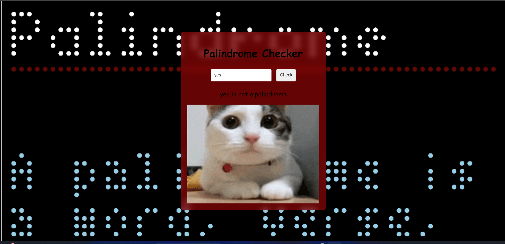
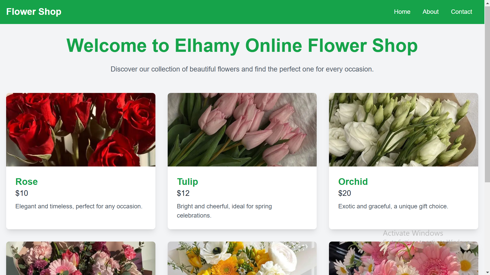
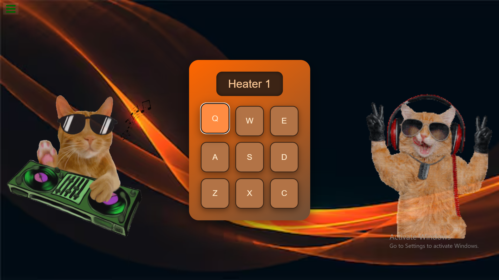
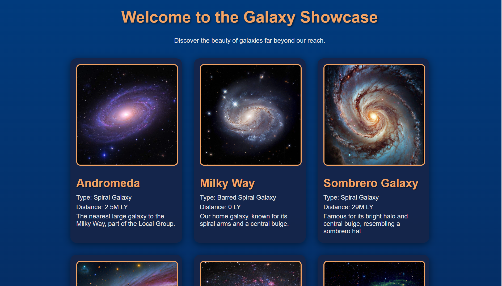
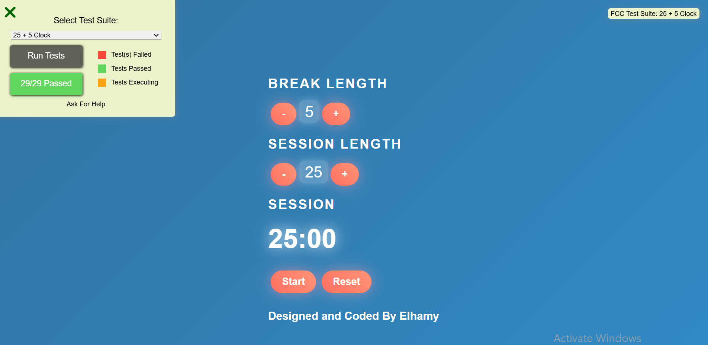

The Pokémon Search App
A web application that allows users to search for Pokémon by name or ID.

Roman Numerals Converter
A web app that converts numbers to Roman numerals and checks if they are even or odd.

CatInfoApp
A comprehensive platform designed for cat enthusiasts.

Palindrome Checker
The Palindrome Checker is a web application that allows users to input a string and determine whether it reads the same forwards and backwards, identifying if it is a palindrome.
Phone Validator App
The Telephone Validator project is designed to validate and standardize phone numbers, enhancing data integrity and usability for contact management.

Cash Register App
The Cash Register project is a web-based application that automates the process of calculating the change to be returned to customers.
.png)
Calculator
A responsive and interactive calculator application built with React.

Elhamy Online Flower Shop
A simple and elegant online flower shop built with Next.js.

Drum Machine
An interactive drum machine built using React for music enthusiasts.

Advanced Next.js: Dogs Gallery
A dog gallery web app built with Next.js to showcase a collection of dog images.

Galaxy Showcase
A Node.js application to explore and showcase stunning images of galaxies.

Pomodoro Clock
A React-based time management tool that helps users organize their work sessions with intervals of focus and rest.

The Pomodoro Clock is a time management application built with React. It implements the Pomodoro Technique, which divides work into intervals of focused activity (usually 25 minutes) followed by short breaks (5 minutes). Users can adjust the length of work sessions and breaks according to their preferences.
Key features of the Pomodoro Clock include a countdown timer, session and break length customization, and sound notifications when the time is up. The user interface is intuitive and responsive, ensuring a seamless experience across devices.
.png) Home
Home.png) About Me
About Me.png) Projects
Projects.png) Skills
Skills.png) Contact Me
Contact Me